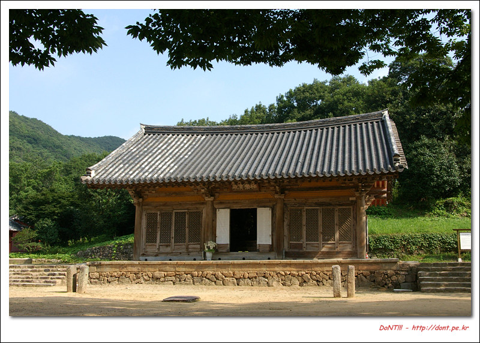
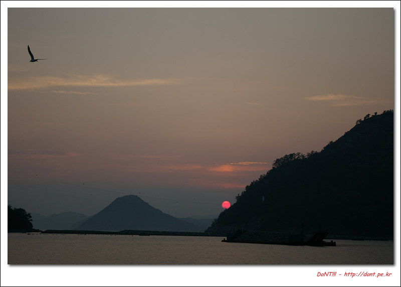

혼자 가는 여행 세번째 (20070723-27 남도여행) - 넷째날
- 2 min read

전날 목포 관광 안내소에서 받은 민박집 안내 책자에서 찾은 민박집. 주인 할아버지 할머니의 손길이 그대로 녹아 있는 조용한 집입니다. 일반 가정집에서 사용 안하는 방 하나를 민박손님에게 내어주는 곳인데, 밤늦게 도착하고, 아침 일찍 떠나느라 급하게 사진 한장만 찍고 떠나야 했습니다.

아침 일찍 도착한 무위사. 전라남도 월출산 한켠에 위치하고 있는, 고즈넉한 절입니다. 아직 채 해가 뜨지도 않은 산사를 이리저리 돌아다녀봅니다. 시간을 때울 요량으로 극락보전을 어슬렁 거리며 사진이나 찍어봅니다. 극락보전 안에는 전시관에 옮긴 벽화 말고도 볼게 많이 있습니다. 사진은 따로 찍지 않았지만, 백의관음도가 그대로 남아 있습니다. 이 백의 관음도를 보기 안에서는 부처님 뒷전으로 돌아가야 하지만, 아무도 막는 사람은 없습니다. 뒤로 돌아가 쪼그려 앉아서 보면, 여타 책에서 보아오던 사진과는 완전히 다른 벽화를 볼 수 있습니다.


10시 반까지는 아직도 시간이 많이 남아 있습니다. 바쁜일도 없고, 그냥 나무그늘 아래서 천천히 책이나 읽으면서 기다렸습니다. 간혹 몇몇 방문객들이 왔었지만, 그냥 조용히 있다 돌아가더군요. 그렇게 거의 다섯시간을 무위사에서 보냈습니다. 너무 조용한 분위기가 정말 마음에 들더군요. 중간에는 부산 광안리에서 오신 아저씨과 잠깐 이야기도 나누었습니다. 처가가 근처라 가족과 함께 오신건데, 조계종에서 일하고 계시는데, 무위사가 좋아서 이곳에 자주 오신다고 하더군요.

아침도 안먹은탓에, 점심을 일찍 해결하기로 하고 강진 시내에 들어갔습니다. 관광안내책자에 나온 한정식 식당 여기저기 다녀봤는데, 혼자서 먹을 수 있는곳은 없더군요. ㅜㅜ
4인 기준 한상 2만원. 한정식은 한상단위로 나오기 때문에 혼자 시켜도 한상이 다 나온다...
좌절스러웠습니다. 그래도 여기까지 와서 한정식을 한번 먹어야겠기에 아무 식당에나 들어가서 흥정을 했습니다. 흥정을 하는데 밖이 소란스럽더군요. 자전거 여행을 하는 학생이었는데, 저와 똑같은 생각을 하고 같은 가게에 들어온 것이었습니다. 예전에 자전거 여행을 했던 기억을 추억하며 그 학생과 함께 밥을 먹었습니다. 그리고 기면사진을 한장 찍고!!

다산 정약용 선생께서 유배 생활을 하셨던 유적지에 들렀습니다. 유물전시관에서 초당으로 넘어가는 길인데, 분위기가 아주 좋습니다.

다산 초당에서 강진만 맞은편에 위치한 고려청자 도요지에 들렀습니다. 강진 대구면 여기저기에 수많은 가마터가 산재되어 있는데, 고려청자 박물관에는 청자 뿐만이 아니라, 가마까지 발굴되어 전시되고 있었습니다.


강진에서 시간을 많이 보내고 다음 방문지를 지리산 노고단으로 선택했습니다.


고흥에서 구례까지 가는 중간에 벌교에서, 지난 자전거 여행당시 찍었던 사진을 기억하면서 같은 장소에서 차 위에 카메라를 올려놓고 사진을 찍었습니다.